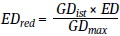
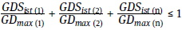
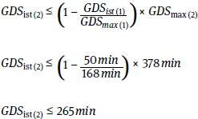
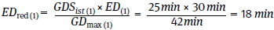
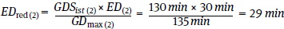

Gebrauchsdauerbegrenzungen sollen eine Überbeanspruchung der atemschutzgerättragenden Person vermeiden. Sie gelten für Arbeitseinsätze nach Betriebsanweisung, nicht aber für Einsätze in Notfällen, z. B. Rettung von Menschen, Brandbekämpfung, Beseitigung von Gasaustritten sowie bei Flucht oder Selbstrettung.
| Der Begriff "Gebrauchsdauer" ersetzt den früher benutzten Begriff "Tragezeit". (siehe Kapitel 2 "Begriffsbestimmungen") |
Die den Atemschutzgeräten zugeordneten Werte für die Gebrauchsdauer (GD) und die Gebrauchsdauer pro Arbeitsschicht (GDS) in Tabelle 21 sind aus langjährigen Erfahrungen abgeleitete Anhaltswerte. Sie ergeben sich durch die gerätebedingten Belastungen für die atemschutzgerättragende Person, z. B. durch das Gewicht, den Atemwiderstand oder das Klima im Gerät.
Im Allgemeinen kann bei Einhaltung dieser Werte die Überbeanspruchung einer geeigneten atemschutzgerättragenden Person vermieden werden. Praxisnahe Belastungsübungen, die z. B. einen Gebrauch des Atemschutzgerätes über die in der Tabelle 21 genannten Zeiten hinaus erfordern, sind durch den Unternehmer oder die Unternehmerin gesondert zu regeln.
Bei der Festlegung der Gebrauchsdauer und der Erholungsdauer empfiehlt sich die Einbeziehung eines Arbeitsmediziners bzw. einer Arbeitsmedizinerin.
Die Erholungsdauer nach dem Gebrauch eines Atemschutzgerätes ist in jedem Fall einzuhalten. Während der Erholungsdauer sollte keine schwere Arbeit geleistet werden.
Aufgrund der Vielfalt der verfügbaren Atemschutzgerätekombinationen, ist die Tabelle nicht abschließend. Für Atemschutzgeräte, die nicht in dieser Tabelle aufgeführt sind, können für die Festlegung der Gebrauchsdauer Atemschutzgeräte mit vergleichbarer Beanspruchung für die atemschutzgerättragende Person herangezogen werden.
Tabelle 21 Gebrauchsdauer für Atemschutzgeräte
| Nr. | Schutzausrüstungen | Gebrauchs- dauer (Minuten) GD |
Erholungs- dauer (Minuten) ED |
Gebrauchs- dauer pro Arbeitsschicht (Minuten) GDS |
Eingruppie- rung nach AMR 14.21) |
| 1 | Behältergeräte mit Druckluft (Pressluftatmer) | ||||
| 1.1 | Geräte über 5 kg Gesamtmasse | 60 | 30 | 2403) | 3 |
| 1.2 | Geräte bis 5 kg Gesamtmasse | funktionsbedingt | 10 | 420 | 2 |
| 2 | Regenerationsgeräte | ||||
| 2.1 | Geräte über 5 kg Gesamtmasse | 120 | 120 | 2403) | 3 |
| 2.2 | Geräte bis 5 kg Gesamtmasse | funktionsbedingt | 30 | 360 | 2 |
| 3 | Schlauchgeräte | ||||
| 3.1 | Frischluftdruckschlauchgerät oder Druckluft-Schlauchgeräte mit Vollmaske und Lungenautomat oder konstanter Luftversorgung | 150 | 30 | 420 | 1 |
| 3.2 | Druckluft-Schlauchgerät mit Vollmaske und Lungenautomat in Verbindung mit einem Behältergerät nach Nr. 1.2 Gesamtgewicht > 5 kg |
90 | 30 | 360 | 3 |
| 3.3 | Frischluft- oder Druckluft-Schlauchgeräte mit Haube oder Helm < 3 kg |
keine Begrenzung | keine | ||
| 3.4 | Frischluft-Saugschlauchgeräte | 90 | 45 | 3003) | 2 |
| 3.5 | Druckluft-Schlauchgeräte mit Atemschutzanzug | ||||
| 3.5.1 | mit Ventilation nur im Kopfbereich < 3 kg (Typ 3, Typ 4, Typ 5, Typ 6) |
180 | 30 | 450 | 1 |
| 3.5.2 | mit Ventilation nur im Kopfbereich 3-5 kg (Typ 3, Typ 4, Typ 5, Typ 6) |
150 | 30 | 420 | 2 |
| 3.5.3 | mit Ventilation nur im Kopfbereich > 5 kg (Typ 1c) |
60 | 30 | 180 | 3 |
| 3.5.4 | mit Hitzestress verringernden Eigenschaften durch Ventilation des ganzen Körpers mittels zum Körper gerichteter Luftverteilung < 3 kg (Typ 3, Typ 4, Typ 5, Typ 6) |
keine Begrenzung | keine | ||
| 3.5.5 | mit Hitzestress verringernden Eigenschaften durch Ventilation des ganzen Körpers mittels zum Körper gerichteter Luftverteilung 3 - 5 kg (Typ 3, Typ 4, Typ 5, Typ 6) |
210 | 30 | 420 | 2 |
| 3.5.6 | mit Ventilation nur im Kopfbereich > 5 kg (Typ 3, Typ 4, Typ 5, Typ 6) |
120 | 30 | 240 | 3 |
| 3.5.7 | mit Ventilation des gesamten Körpers < 3 kg (Typ 1c) |
180 | 30 | 450 | 1 |
| 42) | Filtergeräte | ||||
| 4.1 | Filtergeräte ohne Gebläseunterstützung | ||||
| 4.1.1 | Vollmaske mit P1- oder P2-Filter | 135 | 30 | 420 | 1 |
| 4.1.2 | Vollmaske mit P3-Filter oder Gasfilter | 120 | 30 | 360 | 2 |
| 4.1.3 | Vollmaske mit Kombinationsfilter | 105 | 30 | 300 | 2 |
| 4.1.4 | Halb-/Viertelmaske mit P1- oder P2-Filter | 150 | 30 | 420 | 1 |
| 4.1.5 | Halb-/Viertelmaske mit P3-Filter oder Gasfilter | 135 | 30 | 420 | 2 |
| 4.1.6 | Halb-/Viertelmaske mit Kombinationsfilter | 120 | 30 | 360 | 2 |
| 4.1.7 | Partikelfiltrierende Halbmaske ohne Ausatemventil | 75 | 30 | 3603) | 1 |
| 4.1.8 | Partikelfiltrierende Halbmaske mit Ausatemventil | 150 | 30 | 420 | 1 |
| 4.2 | Filtergeräte mit Gebläseunterstützung (≤ 3 kg) | ||||
| 4.2.1 | mit Vollmaske | 150 | 30 | 420 | 1 |
| 4.2.2 | mit Halbmaske | 180 | 30 | 450 | 1 |
| 4.2.3 | mit Haube oder Helm | keine Begrenzung | keine | ||
| 4.3 | Filtergeräte mit Gebläseunterstützung (3-5 kg) | ||||
| 4.3.1 | mit Vollmaske | 120 | 30 | 420 | 2 |
| 4.3.2 | mit Halbmaske | 150 | 30 | 450 | 2 |
| 4.3.3 | mit Haube oder Helm | 180 | 30 | 450 | 2 |
| 4.4 | Filtergeräte mit Gebläseunterstützung und Atemschutzanzug | ||||
| 4.4.1 | mit Ventilation nur im Kopfbereich < 5 kg (Typ 3, Typ 4, Typ 5, Typ 6) |
150 | 30 | 360 | 2 |
| 4.4.2 | mit Ventilation nur im Kopfbereich > 5 kg (Typ 3, Typ 4, Typ 5, Typ 6) |
120 | 30 | 240 | 3 |
| 4.4.3 | mit Ventilation nur im Kopfbereich > 5 kg (Typ 1c) |
60 | 30 | 180 | 3 |
| 4.4.4 | mit Hitzestress verringernden Eigenschaften durch Ventilation des ganzen Körpers mittels zum Körper gerichteter Luftverteilung < 5 kg (Typ 3, Typ 4, Typ 5, Typ 6) |
180 | 30 | 450 | 2 |
| 4.4.5 | mit Hitzestress verringernden Eigenschaften durch Ventilation des ganzen Körpers mittels zum Körper gerichteter Luftverteilung > 5 kg (Typ 3, Typ 4, Typ 5, Typ 6) |
150 | 30 | 300 | 3 |
| 5 | Atemschutzgeräte kombiniert mit Schutzanzügen | ||||
| 5.1 | Kombination mit Schutzanzug mit verhindertem Wärmeaustausch (z. B. Chemikalienschutzanzug nach DIN EN 943-1 Typ 1a + Typ 1b) | 30 | 90 einschl. An- und Auskleiden | 603) | 3 |
1) Typische Zuordnung der Atemschutzgeräte in die Gruppen gemäß AMR 14.2 Die Kriterien für die Einteilung sind in Kapitel 9.3 beschrieben.
2) Die Standzeit von Gas- und Kombinationsfiltern kann geringer sein als die maximal zulässige Gebrauchsdauer.
3) Wenn die maximal zulässige Gebrauchsdauer pro Arbeitsschicht (GDSmax) ausgenutzt wird, sollte das Gerät nicht an mehr als zwei Arbeitstagen in Folge und an nicht mehr als vier Tagen pro Woche getragen werden.
Bei der individuellen Festlegung der maximal zulässigen Gebrauchsdauer (GDmax) und der maximal zulässigen Gebrauchsdauer pro Arbeitsschicht (GDSmax) sind beispielsweise folgende Arbeitsbedingungen durch Anpassungsfaktoren (F) zu berücksichtigen:
Sie beeinflussen die Gebrauchsdauer (GD), sowie die Gebrauchsdauer pro Arbeitsschicht (GDS) in gleicher Weise.
Berechnung der maximal zulässigen Gebrauchsdauer (GDmax):
GDmax = GD × FArbeitsschwere × FKlima × FPSA
Berechnung der maximal zulässigen Gebrauchsdauer pro Arbeitsschicht (GDSmax):
GDSmax = GDS × FArbeitsschwere × FKlima × FPSA
Die Arbeitsschwere bei den auszuführenden Tätigkeiten wird durch die in der Tabelle 22 angeführten Anpassungsfaktoren berücksichtigt.
Tabelle 22 Anpassungsfaktor (FArbeitsschwere) für die Gebrauchsdauer durch Arbeitsschwere
| Arbeitsschwere Kategorie* | Atemminutenvolumen | Anpassungsfaktor Arbeitsschwere FArbeitsschwere |
| A 1 | ≤ 20 l Luft pro Minute | 1,5 |
| A 2 | > 20-40 l Luft pro Minute | 1 |
| A 3 | > 40-60 l Luft pro Minute | 0,7 |
| A 4 | > 60 l Luft pro Minute | Sonderplanung im Einzelfall |
* Beispielhafte Tätigkeiten sind in Kapitel 4.5.1.3.13.6 Arbeitsschwere genannt.
Die Werte in Tabelle 21 gelten bei Einhaltung der in den Technischen Regeln für Arbeitsstätten ASR A3.5 und ASR A3.6 definierten klimatischen Anforderungen.
Werden Tätigkeiten außerhalb dieser klimatischen Umgebungsbedingungen ausgeführt, ist dies durch den Anpassungsfaktor FKlima zu berücksichtigen. Bei der Festlegung dieses Faktors ist zu beachten, wie sich Temperatur und Luftfeuchte bei Gebrauch des Atemschutzgerätes auf die atemschutzgerättragende Person auswirken. Dieser Einfluss ist atemschutzgerätespezifisch.
Beispielsweise wird für den Gebrauch eines Regenerationsgerätes bei einer Temperatur von 32 °C und einer Luftfeuchte von 85 % eine Reduzierung der Gebrauchsdauer um den Faktor FKlima = 0,75 in den Leitlinien des Deutschen Ausschusses für das Grubenrettungswesen für Organisation, Ausstattung und Einsatz von Grubenwehren angegeben.
Bei der Kombination von Atemschutzgeräten mit anderer Persönlicher Schutzausrüstung ist mit einer Erhöhung der Beanspruchung der atemschutzgerättragenden Person zu rechnen.
Beispielsweise sollte bei gleichzeitigem Gebrauch eines Atemschutzgerätes mit einem Chemikalienschutzanzug nach DIN EN 14605 Typ 3, der nicht Bestandteil des Atemschutzgerätes ist, ein Anpassungsfaktor FPSA = 0,8 in die Gebrauchsdauerberechnung einbezogen werden.
Ist die tatsächliche Gebrauchsdauer (GDist) kürzer als die maximal zulässige Gebrauchsdauer (GDmax), kann die dem Atemschutzgerät zugeordnete Erholungsdauer (ED) entsprechend gekürzt werden. Die reduzierte Erholungsdauer (EDred) kann wie folgt ermittelt werden:

Wenn verschiedene Atemschutzgeräte in einer Arbeitsschicht gebraucht werden, sollte die Summe der Verhältnisse von tatsächlicher Gebrauchsdauer pro Arbeitsschicht (GDSist) zu maximal zulässiger Gebrauchsdauer pro Arbeitsschicht (GDSmax) nicht größer als 1 werden.

Die für den Gebrauch des Atemschutzgerätes ermittelte Erholungsdauer ist in jedem Fall einzuhalten. Während der Erholungsdauer sollte keine schwere Arbeit geleistet werden und es dürfen nur Atemschutzgeräte ohne Gebrauchsdauerbegrenzung gebraucht werden.
Eine Person soll an einem Tag einen Pressluftatmer (14 kg) gebrauchen und damit schwere Arbeit (Kategorie A3) verrichten die 50 Minuten dauert. Am selben Tag sollen weitere leichtere Tätigkeiten (Kategorie A2) mit einem Druckluftschlauchgerät mit Vollmaske und Lungenautomat unter erschwerten klimatischen Bedingungen verrichtet werden. Für diese wurden in Absprache mit der betriebsärztlichen Betreuung ein Faktor FKlima = 0,9 festgelegt.
Alle notwendigen Erholungsdauern sowie die für diese weiteren Tätigkeiten noch mögliche Gebrauchsdauer GDist(2) können wie folgt ermittelt werden:
Aus Tabelle 21 kann für den Pressluftatmer (14 kg) entnommen werden:
GD(1) = 60 Minuten
GDS(1) = 240 Minuten
ED(1) = 30 Minuten
Der Faktor für die Arbeitsschwere kann aus Tabelle 22 entnommen werden:
FArbeitsschwere (1) = 0,7
Für das Druckluftschlauchgerät mit Vollmaske und Lungenautomat (4,5 kg) sind angegeben: GD(2) = 150 Minuten
GDS(2) = 420 Minuten
ED(2) = 30 Minuten
Festgelegt wurde unter Berücksichtigung des Klimas am Arbeitsplatz:
FKlima(2) = 0,9
Durch die Schwere der Arbeit mit dem Pressluftatmer reduziert sich dessen maximal zulässige Gebrauchsdauer und die maximal zulässige Gebrauchsdauer pro Arbeitsschicht:
GDmax (1) = GD(1) × FArbeitsschwere (1) = 60 min × 0,7 = 42 min
GDSmax (1) = GDS(1) × FArbeitsschwere (1) = 240 min × 0,7 = 168 min
Durch das Klima am Arbeitsplatz reduziert sich die maximal zulässige Gebrauchsdauer und die maximal zulässige Gebrauchsdauer pro Arbeitsschicht für die Tätigkeit mit dem Druckluftschlauchgerät:
GDmax (2) = GD(2) × FKlima (2) = 150 min × 0,9 = 135 min
GDSmax (2) = GDS(2) × FKlima (2) = 420 min × 0,9 = 378 min
Damit errechnet sich die mögliche Gebrauchsdauer für das Druckluftschlauchgerät:

Auf Grund der Arbeitsschwere wäre bei der Tätigkeit mit dem Pressluftatmer nach 42 Minuten eine Erholungsdauer von 30 Minuten notwendig. Aus praktischen Gründen (Luftvorrat) wird die Tätigkeit in zwei Abschnitte mit jeweils 25 Minuten Gebrauchsdauer aufgeteilt. Nach jedem Abschnitt wird somit eine Erholungsdauer EDred(1) notwendig:

Bei der Tätigkeit mit dem Druckluftschlauchgerät wird nach 135 Minuten Gebrauchsdauer eine Erholungsdauer von 30 Minuten notwendig. Nach der dann noch verbleibenden möglichen Gebrauchsdauer von 130 Minuten (265 Minuten - 135 Minuten) wird eine Erholungsdauer von EDred(2) notwendig:

Somit wäre für diesen Arbeitstag folgender Ablauf möglich:
| Tätigkeit mit Druckluftschlauchgerät | 135 Minuten 30 Minuten Erholungsdauer |
| Tätigkeit mit Pressluftatmer | 25 Minuten 18 Minuten Erholungsdauer |
| Tätigkeit mit Pressluftatmer | 25 Minuten 18 Minuten Erholungsdauer |
| Tätigkeit mit Druckluftschlauchgerät | 130 Minuten 29 Minuten Erholungsdauer |